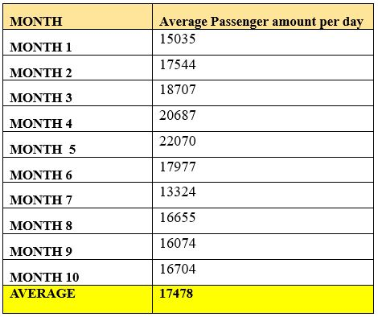

Results And Discussions

LRT User Survey Results from KOBO TOOLS
The user survey and scenario simulation analysis are complementary tools used to evaluate the transportation system. The survey gathers passengers' firsthand experiences, offering insights into comfort, reliability, and daily challenges such as delays or crowding. It reflects real-world usage and highlights user needs that might not be evident through technical data alone.
In contrast, the simulation analysis provides objective, data-driven evaluations of system performance, including travel times, delays, and congestion.
The purpose of the user survey is to give voice to regular commuters. It assesses factors such as purpose of travel, frequency of use, comfort, speed, and reliability. This feedback supports more informed and passenger-centered planning by ensuring that future improvements respond directly to actual user experiences and expectations.
Waiting time
The data from 332 passenger responses reveals severe operational deficiencies in the Addis Ababa Light Rail Transit (AALRT) system. Over one-third of passengers (37.35%) reported waiting more than 30 minutes for a train, indicating serious reliability issues likely caused by poor scheduling or a shortage of trains. Additionally, 34.64% experienced waits between 20 and 30 minutes, highlighting a significant mismatch between service frequency and passenger demand.
Only 26.51% of passengers waited between 10 and 20 minutes, and just 1.51% boarded within 5 to 10 minutes, showing minimal access to timely service. Altogether, 98.49% of passengers endured waits longer than 10 minutes, confirming that delays are widespread and persistent.
These findings point to two major problems: unreliable service likely due to system or scheduling failures, and chronic delays caused by insufficient train frequency.
Journey time
The journey time data from 332 passenger responses highlights important issues in the performance of the Addis Ababa Light Rail Transit (AALRT) system. Most passengers (62.35%) reported travel times between 30 and 60 minutes, and 10.84% experienced journeys lasting more than 60 minutes. Only 26.81% were able to reach their destination in under 30 minutes.
Frist Choice Factor
The data above which is about factors contributing to discomfort when using public transport reveals key concerns among passengers. The most frequently reported issue was overloading, identified by 34.04% of respondents, followed closely by long waiting times for connecting modes, cited by 32.23%. Together, these two issues account for the majority of discomfort, affecting over two-thirds of passengers.
Traffic congestion ranked third, mentioned by 16.57% of respondents, indicating delays caused by road conditions. Other concerns, such as poor infrastructure (6.63%), crowding at terminals (5.42%), and unreliable connecting modes (5.12%), were noted less frequently but still contributed to an overall negative experience.
Preference for BRT
The survey results indicate a strong preference for Bus Rapid Transit (BRT) over other existing transport modes, such as Light Rail Transit (LRT) and regular buses. Of the total respondents, 326 (98.19%) stated they would prefer BRT, while only 6 (1.81%) said they would not.
Basic reasons for choosing BRT
The survey results highlight the main reasons why respondents would prefer Bus Rapid Transit (BRT) over existing transport options, especially in comparison to the Addis Ababa Light Rail Transit (AALRT) system. The most frequently cited reason was service frequency, chosen by 124 respondents (37.35%), followed closely by speed, with 120 respondents (36.14%).
LRT Performance Assessment
Trip Duration and Data Collection
A full journey from one terminal station to the opposite end is timed to take approximately 36.8775 minutes. This duration was determined through comprehensive data collection involving the summation of travel times between stations and the average dwelling time spent at stops, including passenger boarding and alighting. In addition, this timing incorporates operational conditions such as signal delays and acceleration/deceleration phases. The total time is approximately 3100 seconds (Sumo time).
Calculation of LRT Operating Speed
The LRT's speed was derived mathematically by using the ratio of the total operating distance to the total time taken to complete the trip. Specifically, the calculated operating speed is expressed as follows:
Despite the calculated theoretical speed, field measurements of the actual operating speed during subsequent assessments indicated a slightly lower figure, closer to 24.31 km/hr.
Headway Description
The headway or the time interval between two successive trains plays a crucial role in assessing the system capacity and operational efficiency. A primary reference from recent research conducted by (Hussein, 2023) suggested a baseline headway of 15 minutes for the Addis Ababa LRT. However, secondary operational data collected from the AALRT system reveals that the actual headway experienced is longer, estimated at 19 minutes. This corresponds to a time interval of 1597 seconds (Sumo time) in the system's operating model or simulation. This longer headway indicates that there is a 19-minute waiting gap between trains currently traversing the route, which may impact passenger service levels during peak hours.
Service Operating Hours
The AALRT operates a total of 14 hours daily, with service commencing at 2:00 AM and concluding at 4:00 PM. By dividing these total operating hours by the time required for a single trip, we can calculate the number of trips a single train can make in one day.
Current AALRT capacity assessment
To understand how well the Light Rail Transit (LRT) system is serving its passengers, data was collected from the ticket offices of AALRT. These offices recorded daily ticket sales at every LRT station. The data covers a period of ten months, from July 8, 2024, to April 10, 2025. This long-time frame was chosen to get a full picture of how many people use the LRT over different seasons and situations. Every day, the total number of tickets sold in all stations was added up to see how many passengers used the system that day. Then, all the daily totals for each month were combined to find the total number of passengers in that month.
Looking closely at the data, the Light Rail Transit (LRT) system currently serves an average of 17,478 passengers each day. When compared to its full capacity of 57,694 passengers per day, this means the LRT is operating at only about 30.2% of the maximum number of passengers it can carry. This shows that the system still has a lot of unused capacity and can serve many more passengers if operational improvements are made.
BRT Design
To support the growing demand for urban transportation, we analyzed the daily operations of several proposed BRT (Bus Rapid Transit) routes in Addis Ababa. This analysis helps us understand how many buses are needed, how many trips they make, and how many passengers they serve each day. The goal is to design a BRT system that runs efficiently and meets passenger needs. The table below shows the number of buses, trips, and passengers for each route, along with the average number of passengers per bus.
We calculated the total number of BRT passengers by adding the number of passengers currently using the LRT and the number of passengers using city buses.
Speed and Travel time relationship
At a low speed of 24.3 km/h, a full BRT trip takes about 38.4 minutes. But at the planned top speed of 70 km/h, the same trip would take only 22.25 minutes. That's a time saving of more than 16 minutes, which allows BRT vehicles to make more trips each day and reduce waiting time for passengers. Even operating the BRT at 40 or 50 km/h would still save a lot of time, reducing travel to 26.6 minutes and 23.2 minutes, respectively. This proves that increasing speed will improve the system's performance and help serve more people without adding more BRT vehicles
Speed and number of BRT relationship
To design an effective BRT system that meets daily transportation needs, we must ensure that the total passenger-carrying capacity of the system is sufficient. The system must be able to transport at least 79,000 passengers per day. This total depends on the daily working hours of the BRT, the travel time for a single trip, the number of BRT vehicles in operation, and the passenger capacity of each vehicle.
Where:
- Working Hours per Day is the number of hours each BRT operates,
- Travel Time per Trip is the duration of one complete trip,
- 65 is the number of passengers each BRT vehicle can carry
However, after around 50 km/hr, the number of buses needed stops going down and stays almost the same at about 33 buses. This is called a plateau. The plateau happens because other factors like how long buses stop to let passengers on and off limit how many trips a bus can make. So, even if buses go faster, these factors prevent the total number of buses needed from dropping much more. This means that improving bus speed helps reduce the number of buses needed, but only up to a point. The graph above showing the relationship between travel speed (V) and the total number of BRT buses needed (N), can be fitted based on our third-degree polynomial equation:
Speed and Passenger waiting time relationship
The waiting time was calculated using the formula:
Speed Vs. Dwelling time relationship
This section presents a simulation-based analysis of a 40-bus public transportation system, focusing on how operating speed and dwell time affect overall system performance. Two scenarios "25 Seconds" and "20 Seconds" dwell times were compared to evaluate their impact on key performance measures, including travel time, trip frequency, and passenger volume. Reducing dwell time from 25 to 20 seconds shows a clear improvement in system efficiency.
Speed Vs. Travel time
The table below shows that reducing dwell time from 25 seconds to 20 seconds consistently lowers the total travel time across all speeds. The effect is more noticeable at lower speeds but still present at higher speeds. This shows that shorter dwell times improve overall efficiency, making each trip faster regardless of the bus speed.
Speed Vs. Number of trips per day of 40 buses
The table presents the variation in the total number of passengers transported per day as a function of vehicle speed and stop duration. An overall increase in passenger count is observed with higher speeds. Moreover, shorter stop durations (20 seconds) consistently result in a greater number of passengers compared to longer durations (25 seconds), indicating that both vehicle speed and dwell time significantly influence daily passenger capacity.
- Quicker overall travel times, no matter the bus's cruising speed.
- A major jump in the number of trips each bus can complete daily.
- A big increase in the total number of passengers the system can carry every day.